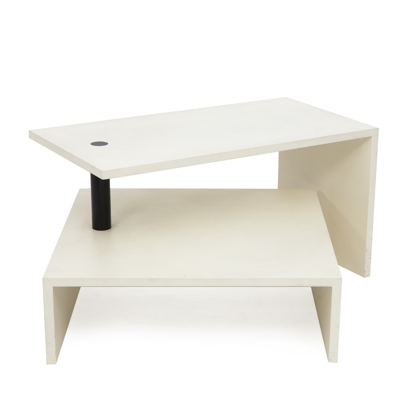
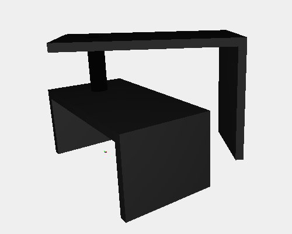

Basello
The Basello two-tier variable spread coffee table designed by Achille Castiglioni in 1987. It has a simple two-tier design in which the top table can swing out to any position adjacent to the lower table. the two tables are joined together by a steel articulated joint painted in a choice of black, aluminum or graphite color. Basello's frame is comprised of two medium density fiberboard elements finished in scratch resistant embossed paint in a variety of colors or veneered in beached oak or wengé-stained oak.

3D modelling
For 3D modeling of this model I used the CUBOID function for each table and a simple function arc for the cylinder that connects them together. Finally I center the model to rotate the two tables as you wish
Screenshot of the 3D model
Python
Javascript
 ZANOTTA Design
- Basello
- Servofumo
- Servomuto
- Servonotte
- Servopluvio
- The Servi's Family
Designer
- Servofumo
- Servomuto
- Servonotte
- Servopluvio
- The Servi's Family